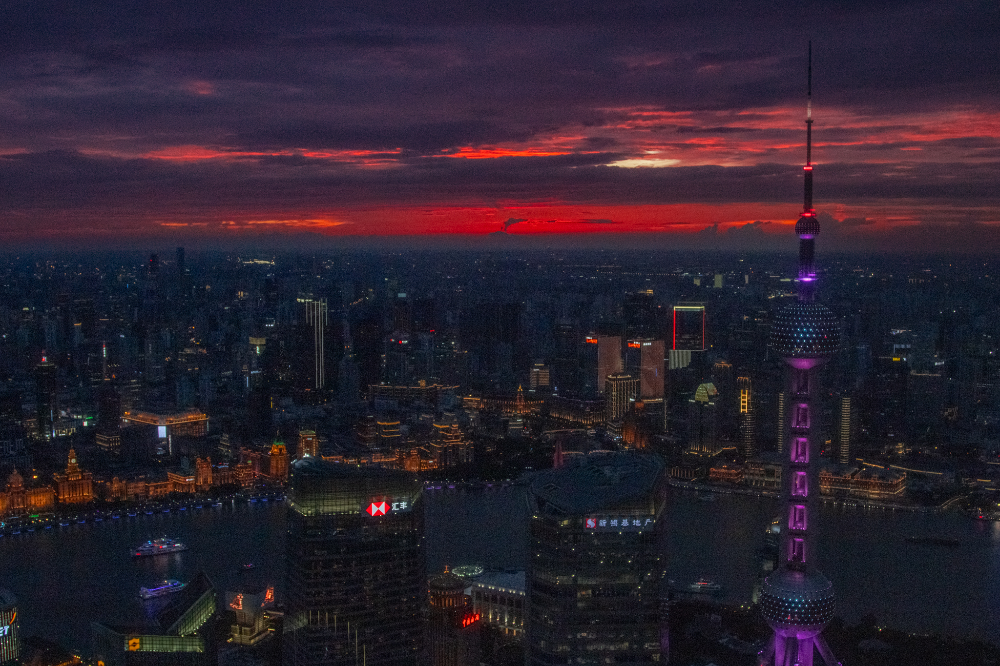
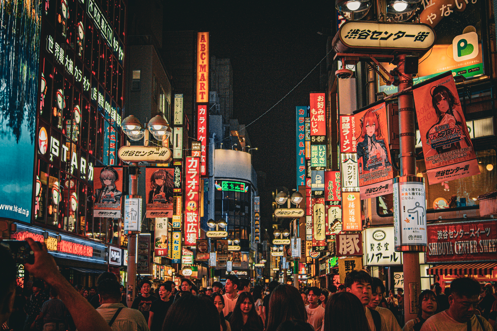
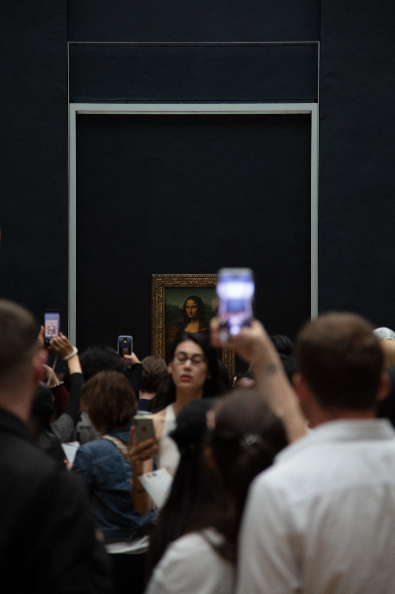

Research Intern @UCSC
- Previously worked on fall detection systems + algorithms
- Currently working on plagiarism detection
- NeurIPS workshop acceptance
- Summer SIP program acceptance (9%)
About
Check out my latest tracks on Spotify!
Experience
A selection of my professional journey.
Work
Developed the first robot to adopt the tipper latch - hooking onto goals to snap them out of pneumatic clamps and corners. Lost in Worlds Semifinals double-DQ replay by 2 points.
Built the only robot having a transmission-powered winch that hung to the highest tier (H-tier) and a cross-bar C-tier hybrid climb.
Photography
A few photos I've taken over the years. Click on any photo to see details.

Tokyo • Japan

Shanghai • China

Tokyo • Japan

Na Pali • Hawaii

Saratoga • California

La Jolla • California

Saratoga • California
Ukkusissat • Greenland

Saratoga • California

Saratoga • California

Paris • France